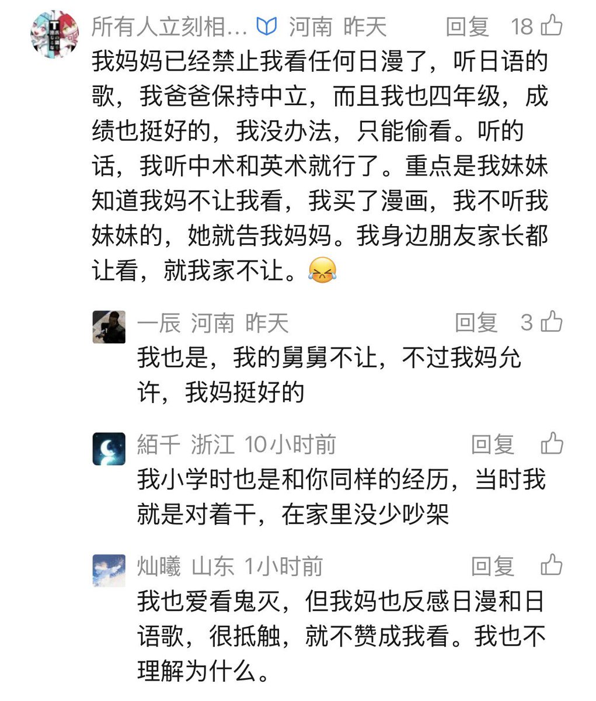

想起高中周末的一个晚上，環状線听日语歌被母亲发现了，然后就被母亲的「爱国主义」教育了半个多小时。从那以后環状線再也没有在家人面前公开听或看过任何日语作品，不过好在有耳机，偷偷听日语歌并不是什么难事。
高考后，有次坐车回乡下，環状線一如既往地用耳机听日语歌。后座的母亲突然问環状線听 的是什么歌，并让環状線给她一只耳机听听。環状線立刻捂住耳朵，但没敢直接开口拒绝，只是保持沉默。好在母亲没有强行夺走環状線的耳机，不然后果实在难以想象。
環状線记得，那个晚上被母亲发现时，听的日语歌名是《きゅうくらりん》，不过并不是很合環状線现在的胃口。
環状線至今还是不敢在父母面前看日漫，環状線认为应该是和这件事有关。
高考后，有次坐车回乡下，環状線一如既往地用耳机听日语歌。后座的母亲突然问環状線听 的是什么歌，并让環状線给她一只耳机听听。環状線立刻捂住耳朵，但没敢直接开口拒绝，只是保持沉默。好在母亲没有强行夺走環状線的耳机，不然后果实在难以想象。
環状線记得，那个晚上被母亲发现时，听的日语歌名是《きゅうくらりん》，不过并不是很合環状線现在的胃口。
環状線至今还是不敢在父母面前看日漫，環状線认为应该是和这件事有关。
